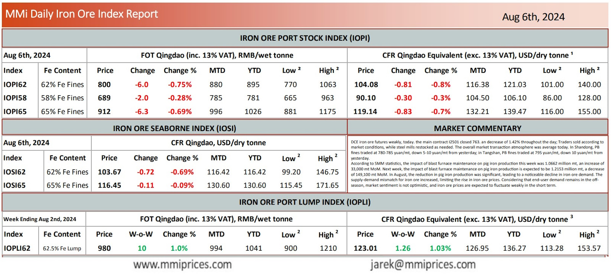

DCE iron ore futures weakly, today. the main contract I2501 closed 763. an decrease of 1.42% throughout the day;Traders sold according to market conditions, while steel mills restocked as needed. The overall market transaction atmosphere was average today. In Shandong, PB fines traded at 780-785 yuan/mt, down 5-10 yuan/mt from yesterday; in Tangshan, PB fines traded at 795 yuan/mt, down 10 yuan/mt from yesterday. According to SMM statistics, the impact of blast furnace maintenance on pig iron production this week was 1.0662 million mt, an increase of 33,000 mt MoM. Next week, the impact of blast furnace maintenance on pig iron production is expected to be 1.2153 million mt, a decrease of 149,100 mt MoM. In August, the reduction in pig iron production was significant, leading to a noticeable decline in iron ore demand. The supply-demand mismatch for iron ore increased, limiting the rise in iron ore prices. Considering that end-user demand remains in the offseason, market sentiment is not opƟmisƟc, and iron ore prices are expected to fluctuate weakly in the short term.

Download PDFSource: Metals Market Index (MMi)